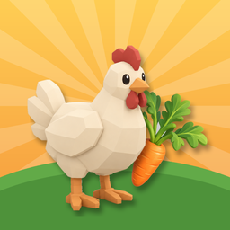

Termos de Uso
FarmClash · versão de 15 de outubro de 2026 · English summary
Ao instalar ou jogar o FarmClash você concorda com estes termos. Se não concordar, não use o jogo.
1. O jogo
O FarmClash é um jogo gratuito, sem compras e sem anúncios, oferecido "como está". Ele está em fase de testes: recursos, equilíbrio e dados podem mudar ou ser reiniciados.
2. Conta
A conta é opcional e serve para salvar na nuvem e jogar com amigos. Você é responsável por manter o acesso à sua conta de Google, Apple ou e-mail. Use apenas uma conta que seja sua.
3. Conduta
Não é permitido: usar nomes de fazenda ou personagem ofensivos, enganar ou perseguir outros jogadores, explorar falhas, modificar o app ou automatizar ações para ganhar vantagem ou sobrecarregar o serviço. Roubar e ajudar nas fazendas dos amigos faz parte do jogo e segue os limites dele.
4. Itens do jogo
Moedas, itens e progresso não têm valor em dinheiro, não podem ser vendidos e pertencem ao jogo. Podemos ajustá-los para corrigir erros ou manter o equilíbrio.
5. Suspensão
Podemos suspender ou apagar contas que violem estes termos. Você pode excluir a sua conta quando quiser (como excluir).
6. Disponibilidade e responsabilidade
O serviço online pode ficar fora do ar ou ser encerrado. Na medida permitida pela lei, não nos responsabilizamos por perda de progresso ou danos indiretos decorrentes do uso do jogo. Nada aqui limita os seus direitos de consumidor.
7. Privacidade
O uso de dados segue a Política de Privacidade.
8. Lei e foro
Estes termos seguem as leis do Brasil. Contato: frcc24@gmail.com.
English summary
FarmClash is a free game in testing, provided "as is", with no purchases or ads. Accounts are optional. Don't use offensive names, harass players, exploit bugs or tamper with the app. In-game items have no cash value. We may suspend accounts that break these rules; you can delete yours anytime. Brazilian law applies. Contact: frcc24@gmail.com.